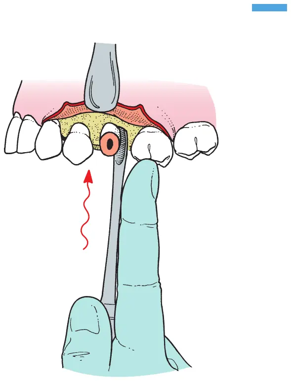

نسخه استخراجشده؛ ترجمه یا تأیید علمی انجام نشده است. وضعیت: captured
مدیریت شکستگیهای استخوان آلوئولار بسته به نوع و شدت شکستگی، اشکال متفاوتی به خود میگیرد. در عمل با دو سناریوی متمایز روبهرو هستی.

سناریوی اول — استخوان کاملاً همراه دندان از ساکت بیرون آمده است:
سناریوی دوم — استخوان هنوز به پریوست چسبیده است. جراحی که حین کشیدن زائدهی آلوئولار را با انگشتانش حمایت میکرده، معمولاً شکستگی را حس میکند. و اینجا خبر خوب است: استخوانی که به پریوست چسبیده باشد، معمولاً التیام مییابد اگر بتوان آن را از دندان جدا کرد و چسبیده به بافت نرم رویی باقی گذاشت.
جراح باید استخوان را همراه با بافت نرم مرتبطش، با دقت از دندان دیسکت کند. روال این کار:
و چرا این زحمت ارزشش را دارد: وقتی به این شیوه درمان شود، بسیار محتمل است که استخوان با شکل ریج مطلوبتری برای بازسازی پروتزی التیام یابد تا اینکه استخوان همراه دندان برداشته شده باشد. بنابراین ارزش دارد که تلاش ویژهای برای جدا کردن استخوان از دندان انجام شود.
و یک نکتهی راهبردی که این درس را به بیمار وصل میکند: استخوانی که امروز با دندان بیرون میآید، فردا در ساخت پروتز غایب است. تفاوت میان یک ریج مطلوب و یک ریج ناقص، اغلب در همان چند ثانیهای رقم میخورد که جراح تصمیم میگیرد استخوان را دیسکت کند یا نه.